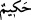
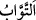
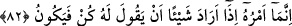
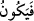
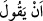
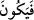
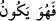
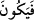
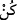

sebeple bazıları der ki: “__WORD__ ismindeki mübâlağa Allah’ın hükmünün/hikmetlerinin
şerîatlara göre tekrar etmesidir. el-Keşşâf’ta der ki: “__WORD__daki mübâlağa, Allah’ın
kullarından O’na tevbe edenlerin çokluğuna delalet içindir. Ya da Allah Teâlâ tevbeleri
kabul etmekte son derece mübalağa eder. Kereminin genişliğinden dolayı tevbe edeni
hiç günah işlememiş yerine koyar.
82. Bir şey yaratmak istediği zaman Onun yaptığı “Ol” demekten ibarettir.
Hemen oluverir.
Varlıklardan “Bir şey yaratmak” var etmek “istediği zaman O’nun yaptığı” iş “Ol”
demekten” yâni kudretini o şeye taalluk ettirmekten “ibarettir. Hemen oluverir.”
“__WORD__ kelimesi “__WORD__ye mâtuf olarak “__WORD__ diye mansub da okunmuştur. Fakat
cumhur, onun “__WORD__ takdirinde olmasına binâen isim cümlesini önceki isim
cümlesine atfederek merfû okumuşlardır.
Mânâ ise şöyledir: O şey asla başka bir şeye bağlı olmaksızın hemen meydana
gelir/oluverir.
Bu, Allah Teâlâ’nın irade ettiği hususta kudretinin tesiri için bir temsildir. Bu tesir,
herhangi bir şeyle oyalanmadan emredilen şeyin çabucak meydana gelmesinde itâat
edilen âmirin itâat eden memuruna emretmesine benzetilmiştir. Ebû Mansur
Matürîdî’nin görüşü budur. Bu sözü hakikate hamletmek için bir sebep yoktur. Zira
ortada herhangi bir söz, emir ve emredilen bir şey yoktur. Emir, olması istenen şeyin var
olması durumu ise böyle bir emir için sebep/gerek yoktur. Yok olması durumu da aynı
şekildedir. Çünkü olmayan bir şeye kendisini var etmesini emretmenin bir mânâsı
yoktur.
Nakşibendî der ki: “__WORD__daki takip (fâ ile hemen peşinden gelme mânâsı) ancak
ibâreden kaynaklanan bir durumdur. Yoksa Allah Teâlâ’nın hükmünün geçmesinin sürati
konusunda tehir de takip de söz konusu değildir.”
Demişlerdir ki: Bu “__WORD__ (Ol)” kelimesi öyle bir alâmettir ki melekler onu işitince
Cenâb-ı Hakk’ın bir şeyi yaratacağını bilirler.
Kâf ve nûn O’nun sun’unun/yaratmasının tomarlarındandır
Kaf ’tan kaf’a kadar her şeyin beli bükülür, dâl olur
et-Te’vîlâtü’n-Necmiyye’de der ki: “Allah Teâlâ burada şuna işaret etmektedir: Ezelî
irâde mükevvenatın var edilmesine taalluk ettiği gibi ezelî hikmete uygun olarak ezelî
kudret de iradeye muvafık olarak ebede kadar mukadderâta taalluk etmiştir. Bu da Allah
Teâlâ’nın “Ol” emrinin işareti iledir ki Allah’ın ezelde dilediği şey ebede kadar olur.”